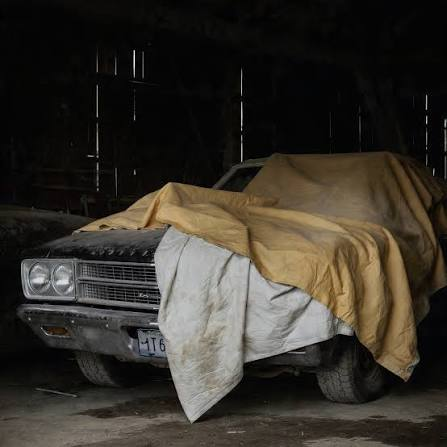

You put the cover back over it, the same way you found it. Nothing about the car has changed. It still smells like him.
The photograph goes back exactly where you found it, in the glovebox, under the folded registration. Untouched, uncreased, waiting for whoever opens this door next.
Close the garage oor and start again.
